Целью данной работы является приобретение практических навыков
установки операционной системы на виртуальную машину, настройки
минимально необходимых для дальнейшей работы сервисов.
Задание
Установить Linux на виртуальную машину
Настроить операционную систему
Теоретическое введение
Linux — это семейство свободных UNIX-подобных операционных систем с
открытым исходным кодом, базирующихся на одноимённом ядре (созданном
Линусом Торвальдсом в 1991 году). Linux отличается высокой надежностью,
безопасностью и гибкостью, используется на серверах, суперкомпьютерах,
Android-устройствах, встраиваемой технике и ПК.
Выполнение лабораторной работы
Устаавливаю ОС на свою виртуальную машину (рис. @fig:001).
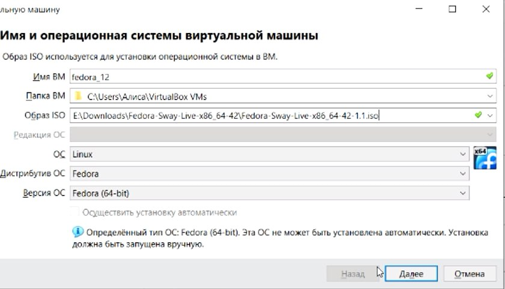
Установка
Устанавливаю файлы на жесткий диск и задаю параметры (рис. @fig:002).
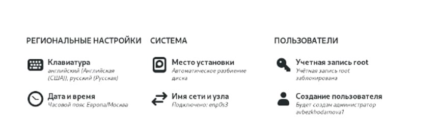
Задание параметров
Устанавливаю средства разработки (Рис @fig:003).
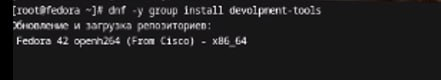
Средства разработки
И (Рис @fig:004)
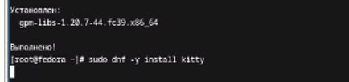
Средства разработки
Отключаю SELinux (Рис. @fig:005)
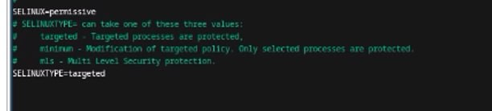
SELinux
Создаю конфигурационный файл (Рис @fig:006)
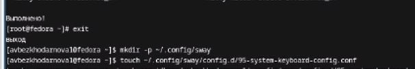
Создание файла
И редактирую раскладки клавиатуры (Рис @fig:007)
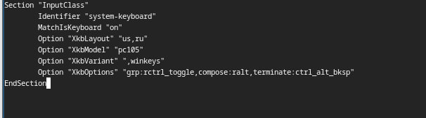
Раскладка клавиатуры
Устанавливаю pandoc-crossref (Рис @fig:008)
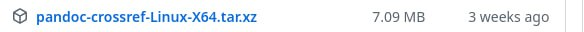
Pandoc-crossref
Устанавливаю pandoc и pandoc-crossref, а также помещаю их в каталог
(Рис.-@fig:009)
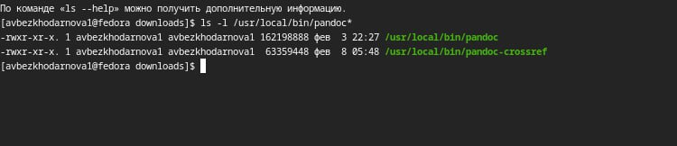
Перемещение файлов
Устанавливаю texlive (Рис. @fig:010)
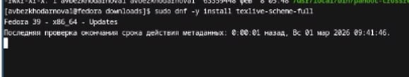
Установка texlive
И убеждаюсь, что оно установилось (Рис @fig:011)
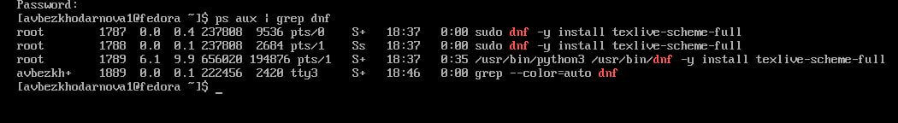
Установка
Домашнее задание
Ввожу команды в терминал (Рис. @fig:012)
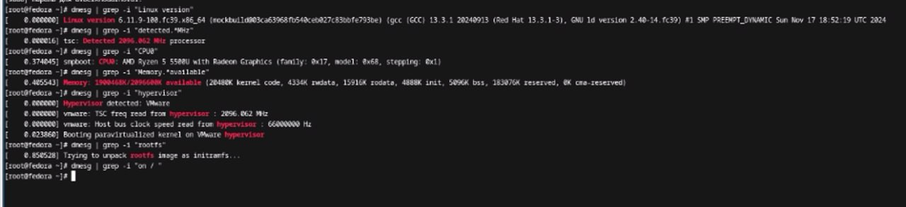
Домашнее задание
Вывод
В ходе данной лабораторной работы я научилась устанавливать Linux,а
также настраивать ее для дальнейшей работы.
Контрольные вопросы
Учётная запись пользователя содержит идентификационную и
служебную информацию: имя пользователя, зашифрованный пароль (или ссылку
на него), числовой идентификатор пользователя (UID), числовой
идентификатор основной группы (GID), комментарий (обычно ФИО), путь к
домашнему каталогу и командную оболочку, назначаемую при входе.
Команды терминала
Для получения справки по команде: · man · –help
Для перемещения по файловой системе: · cd
Для просмотра содержимого каталога: · ls
Для определения объёма каталога: · du
Для создания / удаления каталогов / файлов:
mkdir (создание каталога)
touch (создание файла)
rmdir (удаление пустого каталога)
rm (удаление файла или каталога)
Для задания определённых прав на файл / каталог:
chmod
Для просмотра истории команд:
history
Файловая система — это метод и структура данных, определяющие способ
организации, хранения и именования данных на носителе информации. Она
управляет доступом к файлам и распределением места. Примеры:
ext4: Журналируемая файловая система, стандартная для многих
дистрибутивов Linux. Поддерживает большие файлы и тома, обладает высокой
производительностью и надежностью.
XFS: Высокопроизводительная журналируемая файловая система,
оптимизированная для параллельных операций и работы с большими файлами.
Часто используется в серверных решениях.
btrfs: Современная файловая система с поддержкой снапшотов, сжатия и
проверки целостности данных (механизм copy-on-write).
NTFS: Журналируемая файловая система семейства Windows,
поддерживающая большие тома, разграничение прав доступа и
шифрование.
Для просмотра подмонтированных файловых систем используются команды
mount (без аргументов) или df. Информация также доступна в файле
/etc/mtab.
Для удаления зависшего процесса необходимо определить его
идентификатор (PID) с помощью команд ps или top, после чего отправить
ему сигнал завершения командой kill. В случае если процесс не реагирует
на стандартный запрос завершения, используется принудительный сигнал с
опцией -9.